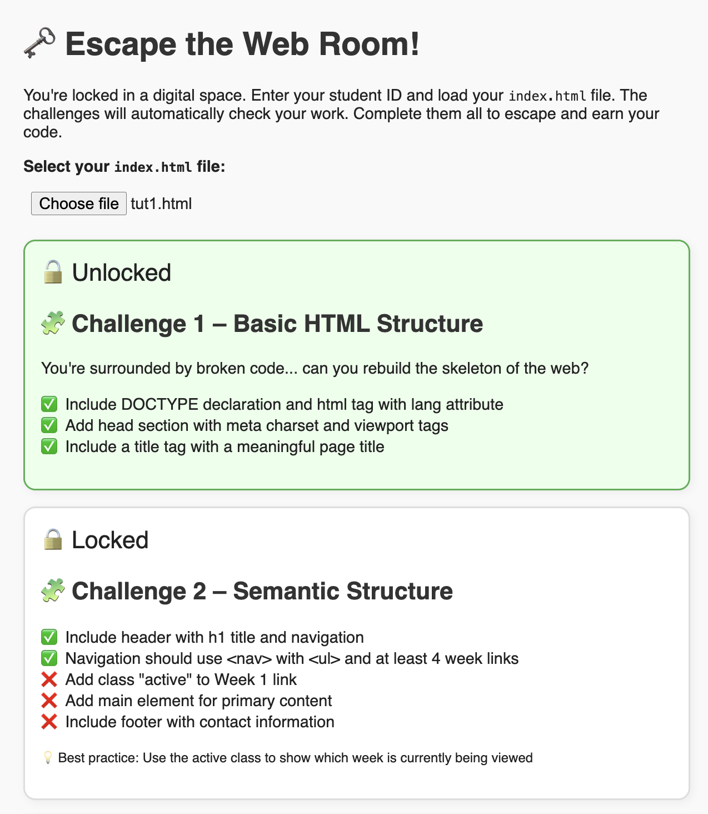
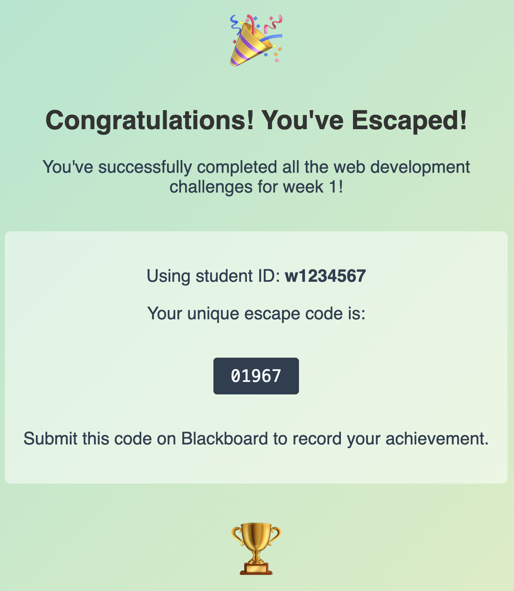
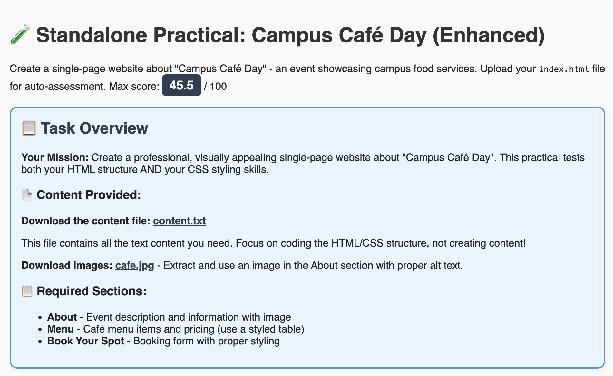
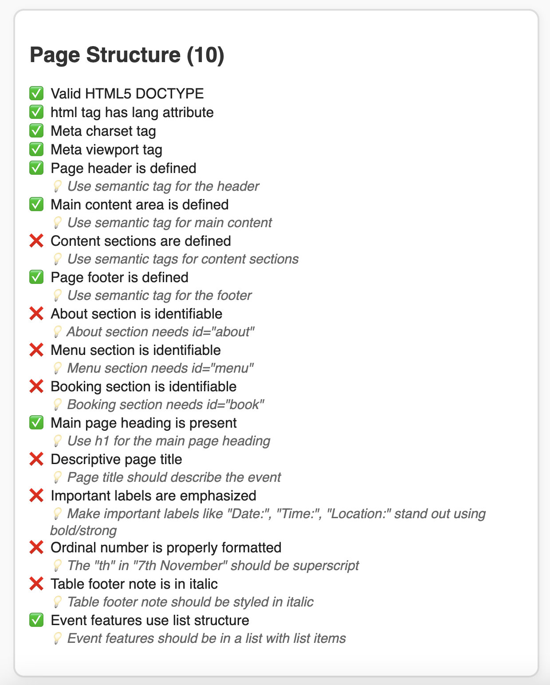
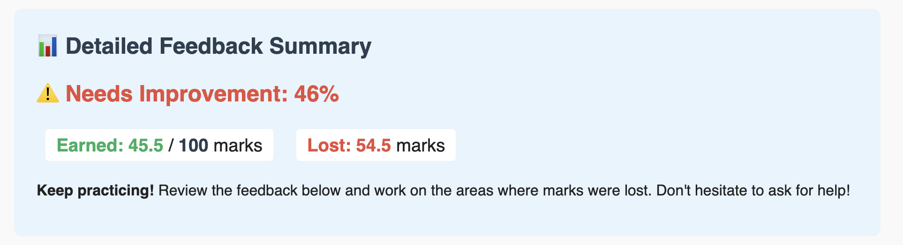
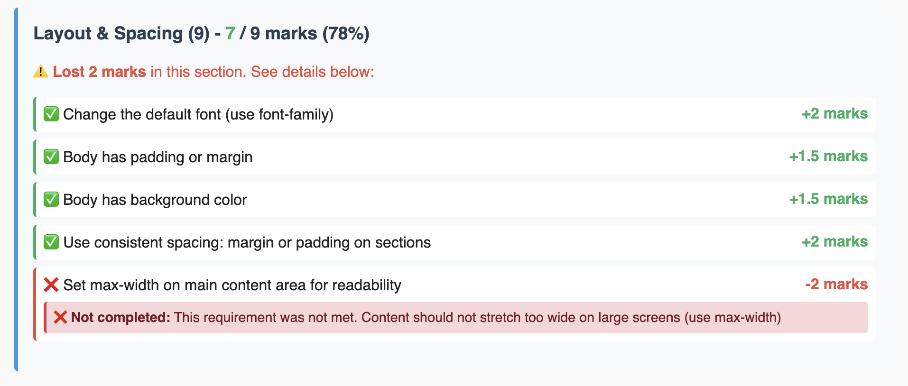
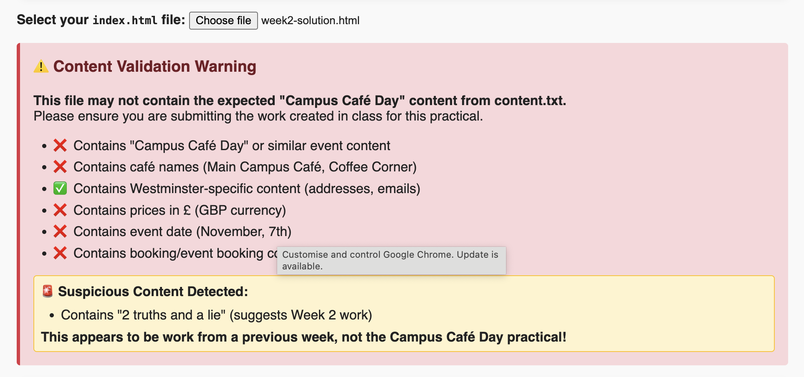
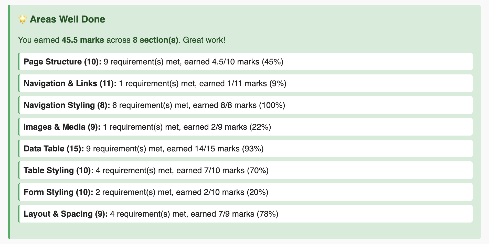
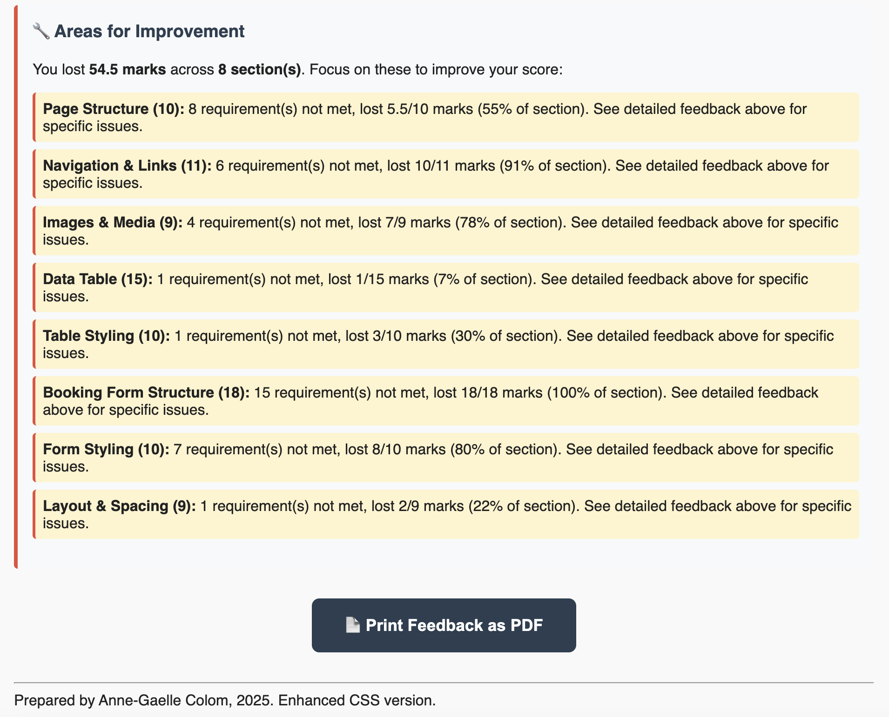

Coding Escape Room
A gamified learning and assessment system for a first-year Web Development module, in which students escape by building real, working webpages. Piloted with 5 students, then deployed at scale to over 400 in Semester 2 2025–26.
Impact at a Glance
Students in Full Deployment
Pilot Group (Semester 1)
Weekly Escape Room Activities
Marks Auto-Scored in Practical
Context
I use the Escape Room activity to prepare students for the authentic assessment of creating a web page. It provides them with an opportunity to familiarise themselves with the summative assessment format through low-stakes weekly activities — in this example, the steps to follow in web page development.
Students on Level 4 Web Design and Development attend a lecture introducing HTML and CSS concepts, then immediately apply what they have learnt by building an authentic webpage framed as an escape room challenge. The format was piloted with a group of 5 students before full deployment in Semester 2 2025–26 to over 400 students.
Rationale
HTML, CSS and JavaScript problems can be solved in many valid ways, and my goal is to encourage students to develop their own coding style through authentic assessment from the very beginning of the module. The automated checker is designed to be flexible — it rewards correct outcomes rather than prescribing a single approach, giving students the freedom to experiment and find solutions that make sense to them.
My goal is also to engage first-year students from the very beginning of the module through gamification, fostering autonomy in learning from the outset of their practical experience. Escape room activities are an ideal tool: students enjoy the competitive and rewarding elements brought by challenges presented in scaffolded, small and manageable steps. The format encourages them to experiment and learn from their mistakes in a low-stakes environment, building confidence alongside competence.
How It Works
Screenshots are sized for comfortable reading on this page. Click any image to open it at full size.
-
Weekly seminar escape rooms (formative): Students familiarise themselves with the format through weekly activities. Each web page development exercise is broken down into themed challenges, which are themselves broken into small and focused tasks. The automated checker validates their work in real time — showing which requirements are met and which still need attention.

Challenge checker — real-time validation with locked and unlocked challenges. Click to open full size. On completing all challenges, students receive a unique code based on their student ID, which they submit on Blackboard to record their achievement.

Escape complete — unique code generated from the student ID for Blackboard submission. -
In-class practical adapted to the same format (summative): Following positive feedback from the pilot students, the summative in-class practical was redesigned in the same escape room style. Students receive the task brief — building a single-page website (Campus Café Day) from scratch in 90 minutes — with detailed tasks and hints structured exactly as in the weekly exercises.

Campus Café Day brief — the summative practical uses the same interface students already know from seminars. Each section of the page is broken down into granular, actionable tasks with hints — so students are never left stuck without guidance.

Task checklist with hints — granular requirements with ticks, crosses, and italic guidance. Click to read at full size. -
Live auto-assessment during the practical: Students can submit their work as many times as they want during the session and receive an indicative mark in real time. This lowers anxiety, gives them agency over how they spend their remaining time, and allows them to make informed decisions about which tasks to prioritise.

Indicative mark summary — overall score and section breakdown during the session. 
Section-level detail — criterion-by-criterion marks with specific hints. Click to open full size. -
Content validation: Students know that warnings will be issued if they attempt to submit work not related to the in-class practical assessment — the checker detects off-topic content and flags it clearly, even identifying which previous week's work it resembles.

Content validation warning — detects when submitted work matches a previous week's exercise instead of the practical brief. -
Detailed feedback generation: When the tutor submits student work, the tool generates a detailed and consistent feedback summary — with encouragement, a breakdown of marks gained and lost across 9 criteria, areas well done, and specific areas for improvement. The tutor can review, amend, and upload this to Blackboard as a PDF.

What they did well — marks earned per section, ready for tutor review. 
Where to improve — specific guidance on marks lost. Click any image to open full size.
Benefits for Learners
Non-linear completion
Hitting a roadblock does not impede overall task completion — students can move to another challenge and return.
Confidence and competence
The low-stakes weekly format lets students experiment and learn from mistakes before anything counts.
Agency and metacognitive control
Students see an indicative mark during the summative practical and can choose what to work on and in what order.
Reduced assessment anxiety
The summative practical uses the exact same format as the weekly seminars — the tool, the checker, and the feedback style are all familiar.
Satisfaction and reward
The trigger–action–feedback loop fosters a genuine feeling of achievement at each completed challenge.
Immediate, actionable feedback
Feedback is concise, specific, and tells students exactly what to fix — not just that something is wrong.
Benefits for Educators
Automatic scoring at scale
Consistent, transparent, and automatic scoring across 400+ students, with manual moderation reserved for borderline cases.
Learning from students
When students come up with original or creative solutions the educator had not anticipated, these become teaching moments to share with the class.
Design Tips
- Be mindful of being too prescriptive — unless the problem has a single solution, reward correct outcomes, not a specific approach.
- Provide hints that guide students rather than full solutions.
- Keep language and visuals clear and consistent across all challenges.
- Allow students to bring their own reference notes into the practical — it incentivises completing the weekly tasks.
Presented at: CETI Best Practice Showcase, University of Westminster, 2026. This project was selected for the showcase as an example of innovative assessment design and student engagement practice.